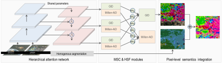

- Transferring Knowledge From Million-AID -
Million-AID consists of large-scale aerial images that characterize diverse scenes. This provides Million-AID with rich semantic knowledge of scene content. Hence, it is natural for us to explore the potential to transfer the semantic knowledge in Million-AID to other domains. To this end, we consider two basic strategies, i.e., fine-tuning pre-trained networks for tile-level scene classification and hierarchical multi-task learning for pixel-level semantic parsing.
- Fine-tuning pre-trained networks for scene classification
Classification Accuracy (%) on AID Dataset Using Different Training Schemes
Classification Accuracy (%) on NWPU-RESISC45 Dataset Using Different Training Schemes
- Hierarchical multi-task learning for semantic parsing
The conventional CNN learns scene features via stacked convolutional layers and the output of the last fully connected layer is usually employed for scene representation. However, learning stable features from single layer can be a difficult task because of the complexity of scene content. Moreover, data sparsity which is a long-standing notorious problem can easily lead to model overfitting and weak generalization ability because of the insufficient knowledge captured from limited training data. To relieve the above issues, we introduce a hierarchical multi-task learning method and further explore how much the knowledge contained in Million-AID can be transferred to boost the pixel-level semantic parsing of aerial images. To this end, the GID, which consists of training set with tile-level scenes and large-size test images with pixel-wise annotations, has provided us an opportunity to bridge the tile-level scene classification toward pixel-level semantic parsing. Generally, the presented framework consists four components, i.e., hierarchical scene representation, multi-task scene classification (MSC), hierarchical semantic fusion (HSF), and pixel-level semantics integration as shown in below.

- Qualitative comparisons among different classification schemes
Images in the first to fifth columns indicate the original image, ground truth annotations, classification maps of baseline, MSC, and the full implementation of our method, respectively.
- Performance comparison among different methods
- Visulization of classification results

Visualization of the land cover classification results on the fine classification set of GID. Images in the first to fourth columns indicate the original image, ground truth annotations, classification maps of PT-GID, and classification maps of our method, respectively.